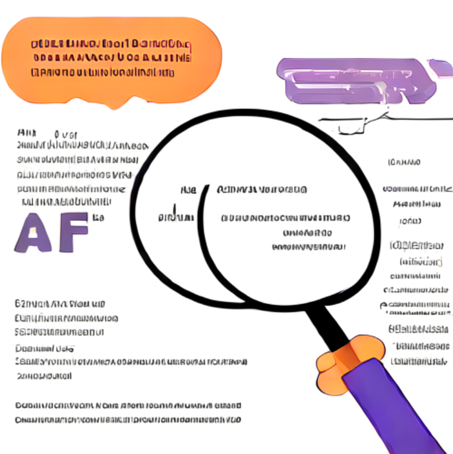

AI 답변에서 다시 확인해 볼 문장을 찾아
검색된 출처와 함께 표시합니다.
데모 https://ai-verify-deliverability.vercel.app
코드 https://github.com/rhdiddlwpffl/AI_Verify_deliverability

길고 자신 있게 쓰인 답변 속에서 무엇을 먼저 확인해야 할까요?
답변을 붙여 넣으면 문장으로 나누고, 확인이 필요한 문장과 근거가 약한 부분을 표시합니다.
또 하나의 답변을 생성하지 않습니다. 이미 받은 답변의 취약한 지점을 찾아 줍니다.
근거가 있다고 참은 아니다. 그래서 "참/거짓"으로 판정하지 않고 "검색된 출처 기준"의 참고 정보로만 보여 줍니다.
로그인 없이 바로 사용합니다. 저장은 사용자가 체크했을 때만 합니다.
| 상태 | 의미 |
|---|---|
| 검색된 출처에서 뒷받침하는 내용 발견 | 참이라는 뜻이 아님 |
| 검색된 출처와 상충하는 내용 발견 | 거짓이라는 뜻이 아님 |
| 출처 간 엇갈림 | 출처마다 말이 다름 |
| 근거 부족 | 관련 출처를 못 찾았거나 판단 불가 |
| 검색 실패 | "근거 부족"과 구분해서 표시 |
| 검증 대상 아님 | 의견, 인사, 질문 등 |
IP당 분당 3회, 24시간 20회, 전체 24시간 60회, 동시 분석 3개. 분석 1회 약 $0.03(실측, 5문장)
저장 기본값은 꺼짐. 저장해도 30일 후 자동 삭제. 로그인 대신 익명 토큰의 해시만 저장
입력한 글이 Anthropic(AI)으로, 검색어가 위키백과로 전송된다는 사실을 화면에 안내
백엔드 테스트
커버리지 약 98% (11단계 시점 측정)
프론트엔드 테스트
계약·문구·접근성
| 단계 | 결과 | 선택 |
|---|---|---|
| 분류 (확인 대상 구분, 검색어) | Haiku와 Sonnet이 동일(재현율 93/93, 특이도 21/21), Haiku가 약 19배 저렴 | Haiku 5.5 |
| 근거 비교 | Sonnet 58/58, Haiku(medium) 56/58, Haiku(low) 55/58 + 결과가 회차마다 흔들리고 잘못된 반박 1건 | Sonnet 5.5 |
| 문제 | 해결 |
|---|---|
| 연도만 다른 문서를 "상충"으로 잘못 판단 | 같은 대상·시점인지 확인하는 항목 추가, 회귀 테스트 |
| 위키백과 429(요청 과다)로 검색 실패 다발 | 속도 조절, 쿨다운, 1시간 캐시, 검증 문장 10개로 제한 (10/10 성공) |
| 서버 내부 오류(500) 응답에 CORS 헤더 없음 | CORS 안쪽에서 처리하는 미들웨어 (테스트가 발견) |
| IP 헤더를 바꿔 호출 제한 우회 가능 | 프록시 헤더 처리 방식을 측정해 운영 실행 옵션 고정 |
| 배포 후 DB 동시 접속 한도 오류(503) | Transaction pooler(6543)로 전환, 부하 시험으로 확인 |
· 근거가 위키백과 문서 앞부분(약 400자)뿐이라 최신 사건·세부 통계는 "근거 부족"이 많음
· 평가 세트가 작고 정답을 직접 정함
· 운영(Render)에서 IP별 분당 제한이 의도대로 걸리는지 확인 중
· 무료 서버라 첫 요청이 느릴 수 있음, 연달아 분석하면 약 28초
· CI는 GitHub에서 아직 실행해 보지 못함
· 회원가입/로그인, 익명 기록을 계정으로 이전
· 검색 출처 확장(뉴스, 공식 문서 등)과 본문 더 깊이 비교
· 평가 세트 확대와 사람 검수
· 브라우저 자동화 테스트 추가
검색된 출처 기준의 참고 정보.
최종 판단은 원문 확인으로.
데모 https://ai-verify-deliverability.vercel.app
코드 https://github.com/rhdiddlwpffl/AI_Verify_deliverability